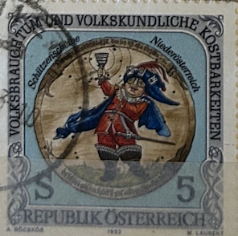
| SOURCE | TITLE| IMAGE MATCH | click to source page |
| www.ebay.com | Austria 1992 MARKSMAN'S TARGET, LOWER AUSTRIA, FOLK FESTIVAL ... | 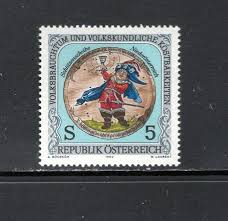 |
| www.hipstamp.com | Austria ^ Scott # 1577 - MH | Europe - Austria, General ... | 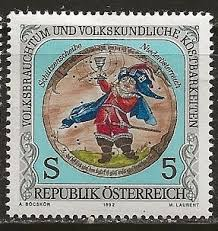 |
| www.amazon.com | Amazon.com: Austria 1869 (Complete.Issue) unmounted Mint ... | 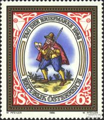 |
| www.aeiou.at | National Customs and Folkloric Delights: Schuetzenscheibe ... | 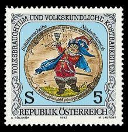 |
| www.ebay.com | Germany - Berlin, Postage Stamp, #9NB272 (2 Ea) Used, 1988 ... | 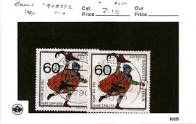 |
| www.hipstamp.com | Austria 1992 MNH Stamps Scott 1577-1579 Folk Art Folklore ... | 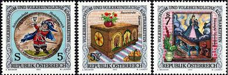 |
| www.ebay.com | Austria 1967 Stamp Day stamp MNH Sg 1515 | eBay | 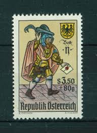 |
| www.ebay.com | Austria 1869 MNH 1986 Day the Stamp | eBay | 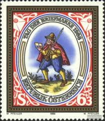 |
| www.buyhungarianstamps.com | 1956-1961 Czechoslovakia - Soldier Standing Guard, Target ... | 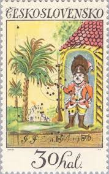 |
| www.collectorbazar.com | Austria 1992 MNH 3v, Craft Folk Customs Chest Shooting ... | 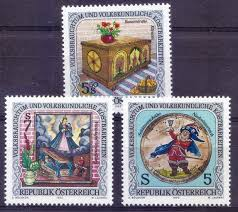 |
| www.buyhungarianstamps.com | 2212-2216 Czechoslovakia - Slovak Ceramics (MNH) – Eastern ... | 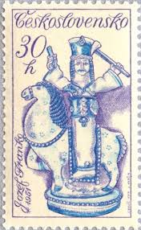 |
| www.mysticstamp.com | 1457 - 1972 8c Colonial American Craftsmen: Silversmith ... | 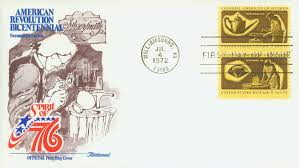 |
| www.shutterstock.com | 14 Polichinelle Royalty-Free Images, Stock Photos & Pictures ... | 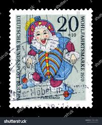 |
| www.math.unl.edu | Bagpipes on Postage Stamps ~ A Virtual Collection | 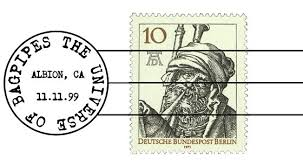 |
| transcription.si.edu | German Notgeld - National Numismatic Collection Instructions ... | 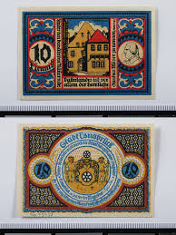 |
| www.bidcurios.com | Germany - Used stamp - 1976 EUROPA Stamps - Handicrafts - (B ... | 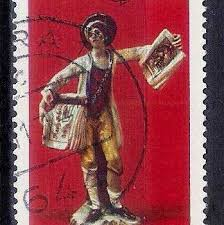 |
| worldstampsproject.org | Austria, National Costumes: 1.50 S. – Wien 1853 – World ... | 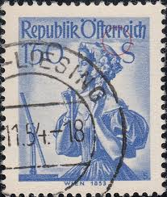 |
| www.facebook.com | First railroad in Germany was between Fuerth & Nuernberg | 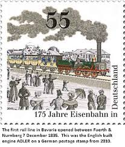 |
| www.alamy.com | Laempel hi-res stock photography and images - Alamy | 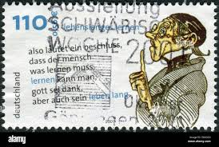 |
| www.germanstamps.net | Richard Wagner Issues | GermanStamps.net |  |
| www.dreamstime.com | 104 Stamp Germany Christmas Vintage Stock Photos - Free ... | 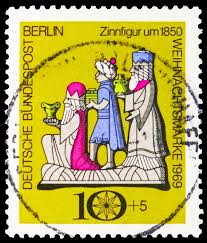 |
| www.istockphoto.com | 30+ Postage Stamp Germany Women Old Fashioned Stock Photos ... | 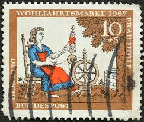 |
| alphabetilately.org | Classic German Poster Stamps | 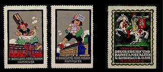 |
| www.arpinphilately.com | Buy Germany #O37 - Official stamp - Numeral value (1923 ... |  |
| www.amazon.com | Amazon.com: DDR 292 unmounted Mint/Never hinged ** MNH 1951 ... | 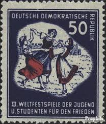 |
| www.mysticstamp.com | 148//208 - 1916-20 Austria - Mystic Stamp Company | 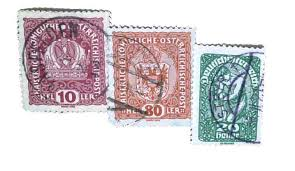 |
| www.alamy.com | 50 pfennig stamp hi-res stock photography and images - Alamy | 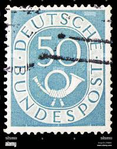 |
| worldstampsproject.org | Germany – types and flaws on postage stamps (1995-1999 ... | 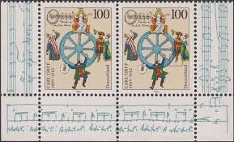 |
| www.instagram.com | October is National Stamp Collecting Month! The National ... | 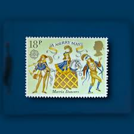 |
| www.dreamstime.com | Boy Selling Newspaper Editorial Images: Over 11 Stock Photos ... | 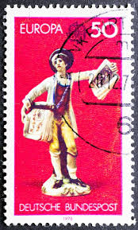 |
| picryl.com | 8 Money of lower saxony Images: PICRYL - Public Domain Media ... | 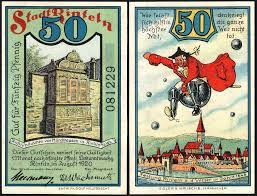 |
| www.citystarlings.com | Fairy Tales You Never Knew Were German Originals | 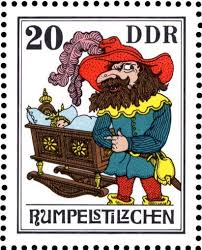 |
| www.ebay.com | Austria 1548-50 + 1577-1579 Festivals Folk Traditions (6 ... | 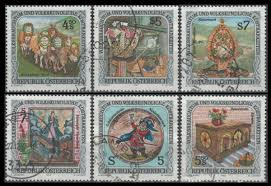 |
| www.buyhungarianstamps.com | 2185-2189 Czechoslovakia - Town Hall Clock, Prague, by Josef ... | 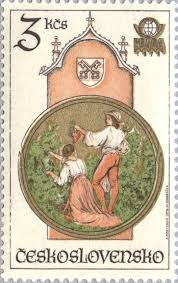 |
| www.banknoteworld.com | Nordhausen 25-75 Pfennig 6 Pieces Notgeld Set, 1921, Mehl ... | 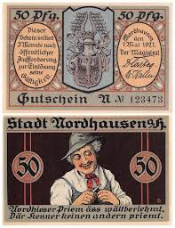 |
| store.usps.com | Putting a Stamp on the American Experience Stamps Stamp ... | 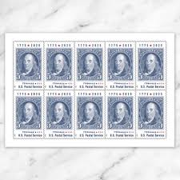 |
| www.shutterstock.com | 8 Rumplestiltskin Royalty-Free Images, Stock Photos ... | 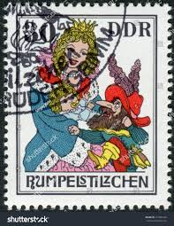 |
| www.rubylane.com | Vintage 1972 Hummel Plate. For Sale at Ruby Lane | 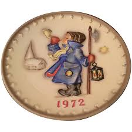 |
| littlepostagehouse.com | Flag of Austria Postage Stamps — Little Postage House | 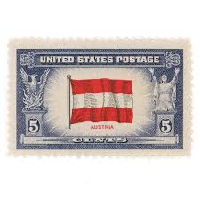 |
| en.wikipedia.org | First stamp of the Russian Empire - Wikipedia | 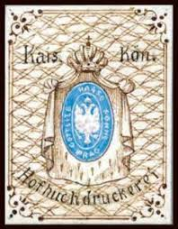 |
| en.numista.com | 25 Pfennigs - City of Torgau – Numista | 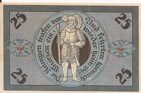 |
| www.museumofphilately.com | ROMANIA: 1858 Bull's Head 81 Parale Bright Blue Wove Paper ... | 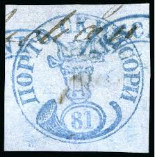 |
| www.postbeeld.com | Stamps from Germany, Federal Republic - PostBeeld - Online ... | 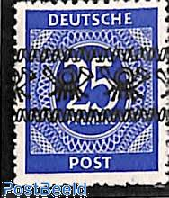 |
| literature.fandom.com | Frau Holle | Literawiki | Fandom | 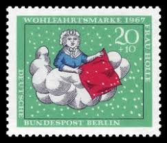 |
| web.olivet.edu | Euler | 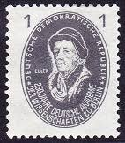 |
| www.lathes.co.uk | Bruno Madler Drill Press - Berlin | 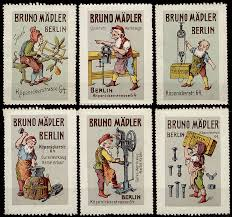 |
| playingcardcollector.net | Playing Cards and Art: Playing Cards on Stamps | PLAYING ... | 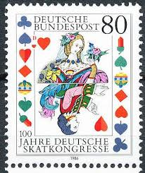 |
| www.danstopicals.com | Pedro Reinel | 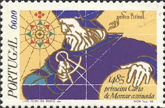 |
| stampbears.net | So many different Germanys! | Stamp Bears | 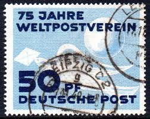 |
| feynman.com | Fantasy Stamps – Richard Feynman | 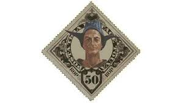 |
| austria-forum.org | 1992 | Briefmarken | Kunst und Kultur im Austria-Forum | 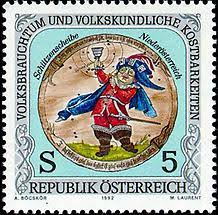 |
| www.bidcurios.com | SWITZERLAND - 50 Different. Large & Small. Mostly Old Used ... | |
| planetbanknote.com | Graded Banknotes - PCGS - Planet Banknote | |
| thestampforum.boards.net | Cartoon and Comic Book Characters | The Stamp Forum (TSF) | |
| postalmuseum.si.edu | The Language of Philately | National Postal Museum | |
| www.clarku.edu | Barry Hoffman Postcard Collection | Strassler Center | Clark ... | |
| www.catawiki.com | German Empire 1933 - Paul von Hindenburg in the medallion ... | |
| www.mirror.co.uk | Family finds rare Christmas stamp worth £400 hidden in ... | |
| www.ancient-origins.net | Till Eulenspiegel: The Crude Pranks and Hilarious Hi-jinks ... |